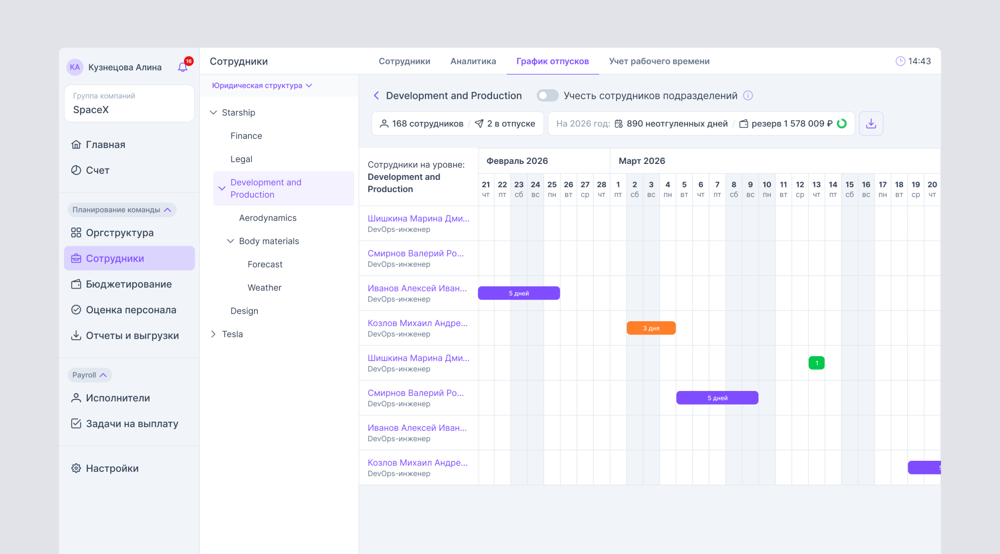
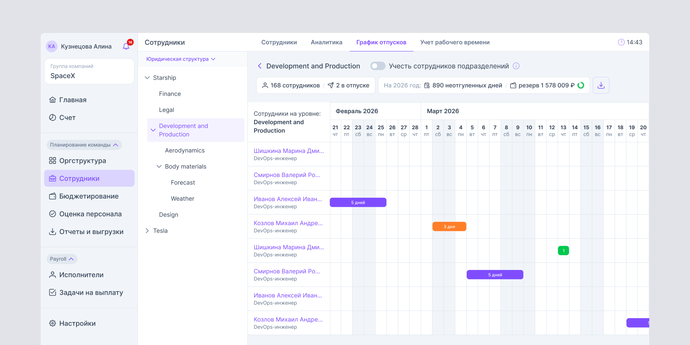
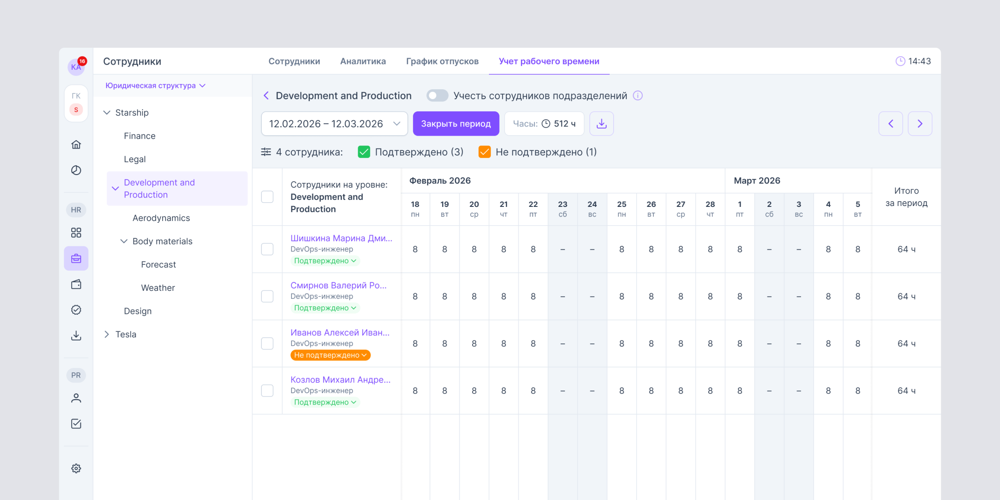
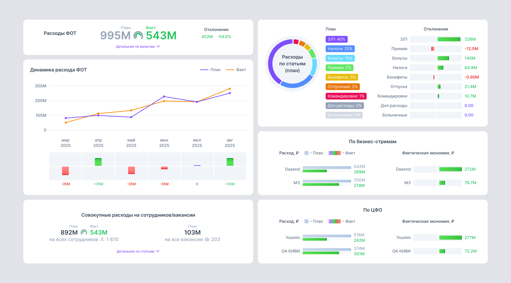
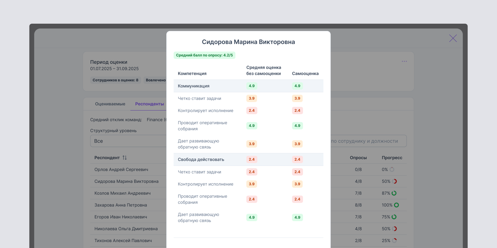
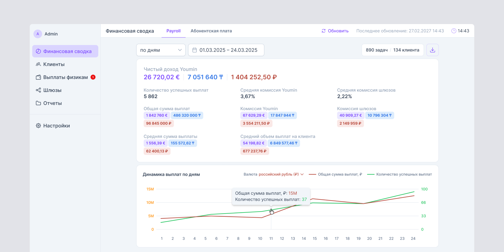
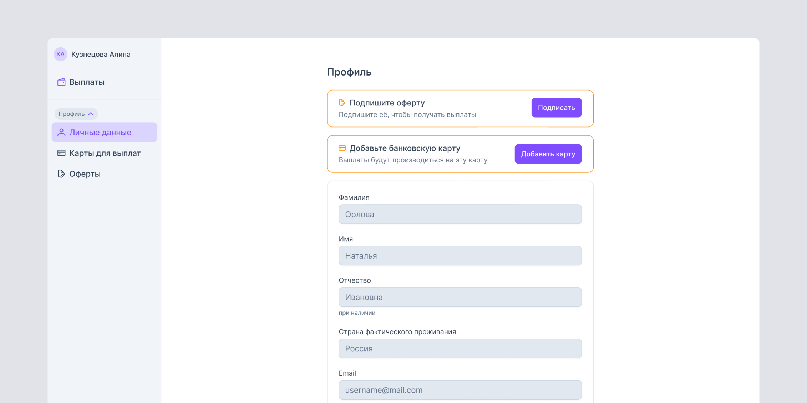
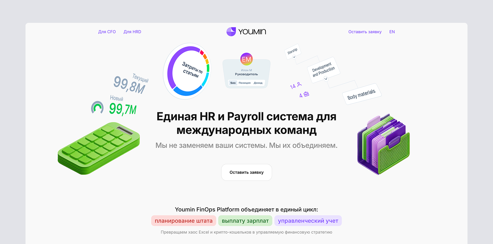

Youmin
HR-система для управления сотрудниками, расходами на персонал и выплатами
Роль
Продуктовый дизайнер
Что за продукт
Youmin помогает компаниям вести организационную структуру, управлять данными сотрудников, планировать расходы на персонал и проводить выплаты. Система объединяет HR-команду, руководителей, бухгалтерию и исполнителей в одном рабочем контуре.
Задача
Развивать сложный B2B-продукт так, чтобы крупные таблицы, финансовые показатели и многоуровневая структура компании оставались понятными в ежедневной работе. Важная часть задачи — связать HR-процессы и выплаты в цельный, предсказуемый пользовательский опыт.
Что я делал
Прорабатывал сценарии и интерфейсы ключевых модулей: карточки и списки сотрудников, организационную структуру, графики отпусков, учёт рабочего времени, бюджетирование и оценку персонала. Продумывал поведение больших таблиц, фильтрацию, статусы и работу с иерархией подразделений.
Отдельно развивал контур выплат: финансовую сводку для команды Youmin, сценарии работы с клиентами и выплатами, а также личный кабинет исполнителя — от заполнения профиля и привязки карты до получения денег.
Собирал экраны и состояния в единую систему, чтобы продукт масштабировался без потери понятности: единые паттерны для навигации, таблиц, форм, уведомлений, цветовых статусов и аналитических блоков.
Результат
Получился развиваемый интерфейс для разных ролей и задач: от планирования команды и оценки сотрудников до контроля финансовых показателей и самостоятельного получения выплат исполнителями.







